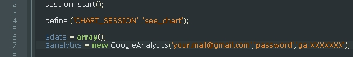
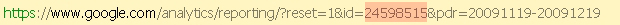
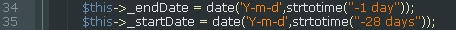
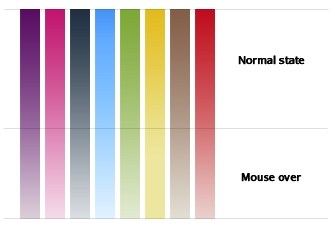
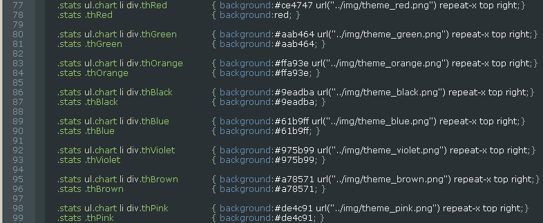
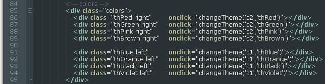
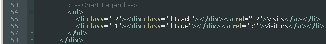
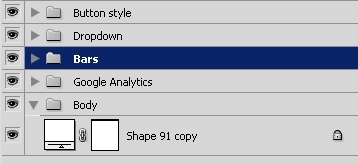
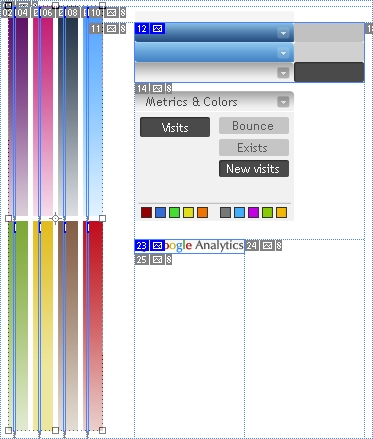

See Analytics is a chart module that's using Google Analytics and is designed to work with See Interface Admin with a beautifull and accesible interface based on the Jquery framework.
Contents
Installation
To install the chart module you must copy the file to your server, and configure the Google Analytics account details (mail, password, profile id)
The account details are in the file : php/module.analitycs.php

To get the Google Analytics profile ID, log in to your Analytics account, select the site, and open a profile, and the URL should look like this:

In this case the profile id is :24598515, so you replace XXXXXXXX with the id in place and this should be all.
The chart data represents the visits/visitors from the last 28 days

To change this, you can simply set another interval, but remember that the chart needs 28 columns. if you have the skills you can add more or less days changing the column width from css.
CHART_SESSION is the session key where the analitycs data is cached to avoid grabbing the data from google on every page refresh. The data is cached once per session.
Customisation - Chart colors
There are 8 colors available, the top part is for normal state, and the bottom part when you hover the mouse over the div...

Creating new colors
To create a new color open the PSD file and modify the bar color and slice name, and export, you must also add a few lines in the css file:

You must create a new color using the model: thColor.
Also, in the settings panel you must add the color
And if you want to se it like a default color you must modify here :

Photoshop template
In the template you have the layers grouped like this:

The slices are already added, after you've modified a color go to File- Export for web & mobile, select the silce and save.
